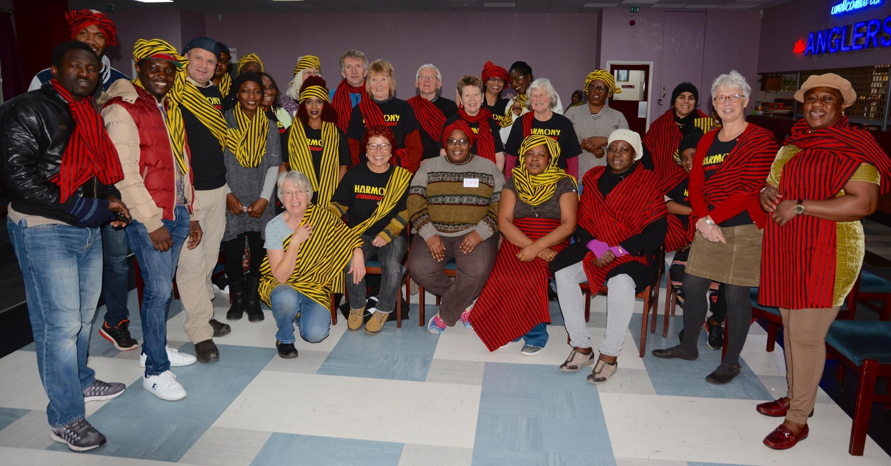

Leeds has choirs for every taste to join. There's a few within a 5 mile radius of the city centre for every day of the week and joining is easy

Harmony Choir is a community choir based in Leeds. They sing a wide range of music, from pop to classical, and everything in between. We are open to all ages and abilities, and we welcome new members at any time.
Rehearsals are every Tuesday evening from 7.30pm to 9.30pm at St. John's Church, New Briggate, Leeds.
Formed in 2009, Harmony choir is still going strong. Harmony was formed by Frances Bernstein and a few others. Starting with just a few members, the choir has grown in numbers and repotoire
MORE........>